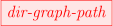
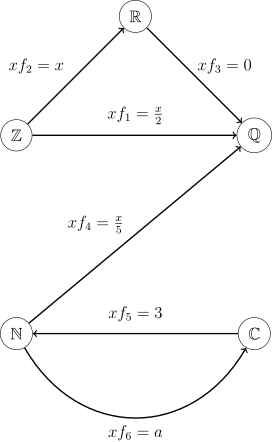
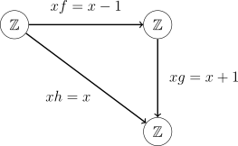

For a better reading experience, consider viewing the PDF.
In this project, we will give a more rigirous definition of a commutative diagram than I could find online. We start off with elementary graph theory definitions to define what we will call a diagram, which we will then use to define the commutative diagram as well as different edge notations. To finish, we use the definition of a free group to give an example of a commutative diagram before giving a very brief word on category theory. Throughout there are diagrams to help the reader understand.
To give a formal explanation of commutative diagrams, we first have to understand some graph theory. Definitions 1, 2, and 3 are standard and are provided to clarify notation.
Definition 1 (Directed graph). Let V be a set and E be a subset of the set of all possible ordered pairs of V . A directed graph is the tuple G = (V,E). We will call elements from V vertices and elements from E edges.
Remark. A directed graph is a graph where the edges are ordered pairs instead of unordered pairs.
When drawing directed graphs, the edges between vertices are denoted by arrows pointing from the first coordinate to the second. For example, the directed graph ({a,b,c,d},{(a,b), (c,d), (d,c), (d,b)}) is shown in Figure 1.
Definition 2 (Path). Let G = (V,E) be a directed graph. A (finite) path in G is a sequence (vn)n=1k of vertices (k ∈ℕ) such that (v i,vi+1) ∈ E (1 ≤ i < k) and vi≠vj (1 ≤ i,j ≤ k,i≠j). Infinite paths are defined analagously.
The term path can be in reference to a finite or an infinite path. An example of a path in a directed graph is shown in Figure 2.

Definition 3 (Labelled graph). Let G = (V,E) be a graph and L be a set. A edge-labelling of G is a map f : E → L.
Graph labellings are presented on pictures of graphs by noting the image of an edge next to the edge, as in Figure 3 where the graph has been labelled with {1, 2, 3, 4, 5, 6}. Now that we have all the standard graph theory definitions we need, we can define a diagram. This is the bridge between graph theory and the representation of mappings as edges which we will use to define commutative diagrams.
The following is the definition of a diagram, which the definition of a commutative diagram will follow straight after.
Definition 4 (Diagram). Let L be a set of mappings and V a family (set of sets). A diagram is a directed graph (V,E) with edge-labelling f : E → L such that if (v1,v2) ∈ E then the domain and range of (v1,v2)f are v1 and v2 respectively.
In essence, a diagram is an edge-labelled directed graph where the vertices are sets and the edges are mappings from the first coordinate of the edge to the second. Figure 4 is an example of a diagram. Note that in the diagram, f1≠f2f3, despite what the arrows may suggest; this is what makes the diagram non-commutative. Now, as promised:

Definition 5 (Commutative diagram). Let G = (V,E) be a diagram with edge-labelling f. We call G a commutative diagram if for any vertices v1,v2 ∈ V and any two paths (v1,x1,x2,…,xn,v2) and (v1,y1,y2,…,yk,v2) (n,k ∈ℕ) then
(This is a composition of functions.)
Remark. Authors may say that that a diagram commutes rather than say that a diagram is commutative. These are equivalent wordings of the same thing.
Let f : ℤ →ℤ be defined by xf = x − 1, g : ℤ →ℤ be defined by xg = x + 1, and h : ℤ →ℤ by defined by xh = x. Using these functions, we can create a commutative diagram, since fg = h. This commutative diagram can be seen in Figure 5.

The following concepts can be denoted using graph theory (using further edge labellings) but as this will only make the ideas more tedious, we won’t. Authors use different styles of arrows on commutative diagrams to signify the type of map of the label. The following is the list of the most common ones.
A well known example of a diagram containing these styled arrows and labels is the definition of a free group using the universal property.
Let S be a set and F a group containing S. We say that S is a free generating set for F if for any group G and any map φ : S → G the following diagram commutes.
where sι = s for all s ∈ S and is the extension of φ to a homomorphism.
Reading the commutative diagram in Definition 6 tells us that if S is a free generating set for F then for any map φ : S → G, we can find a unique homomorphism which extends φ such that φ = ι.
Commutative diagrams are used often in the study of categories, which are mathematical objects which are used in almost all areas of mathematics (the free group definition, for example). Instead of maps between two sets, edge-labellings of diagrams in category theory are morphisms, which are similar but distinct from maps. If interested, there are plenty of resources on this subject, such as Riehl’s textbook Category Theory in Context.